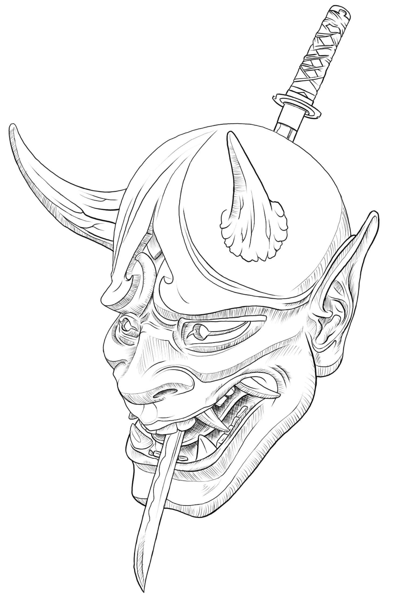
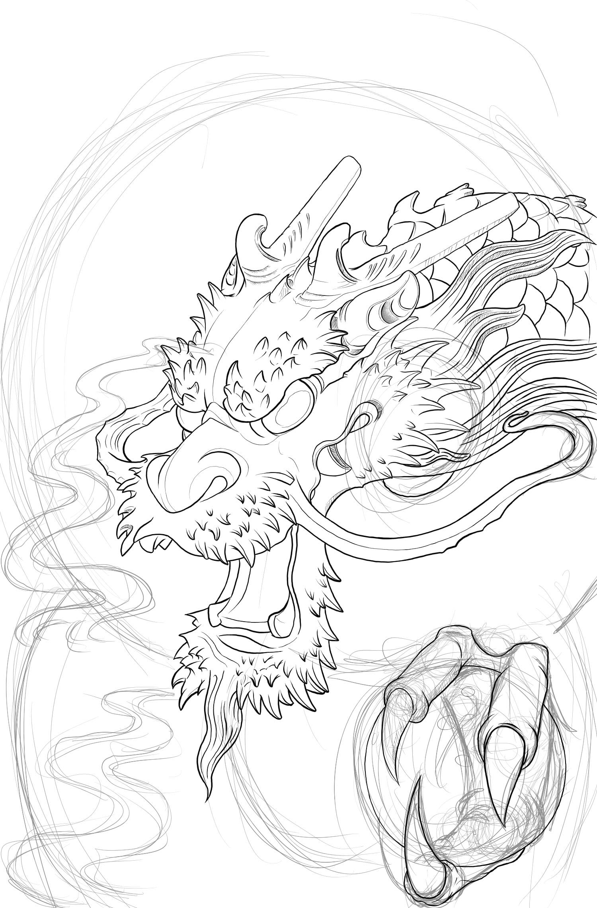
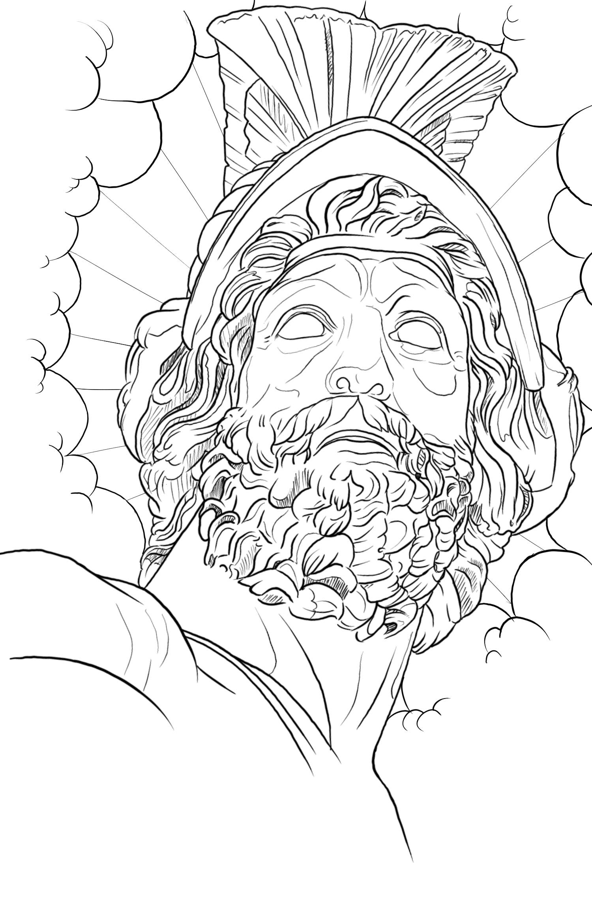
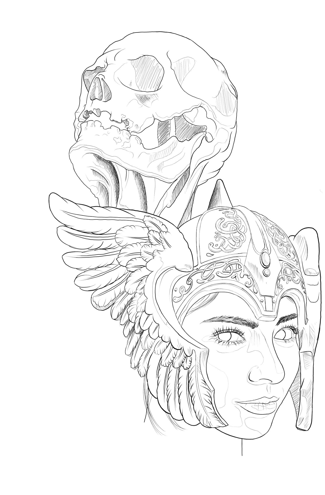
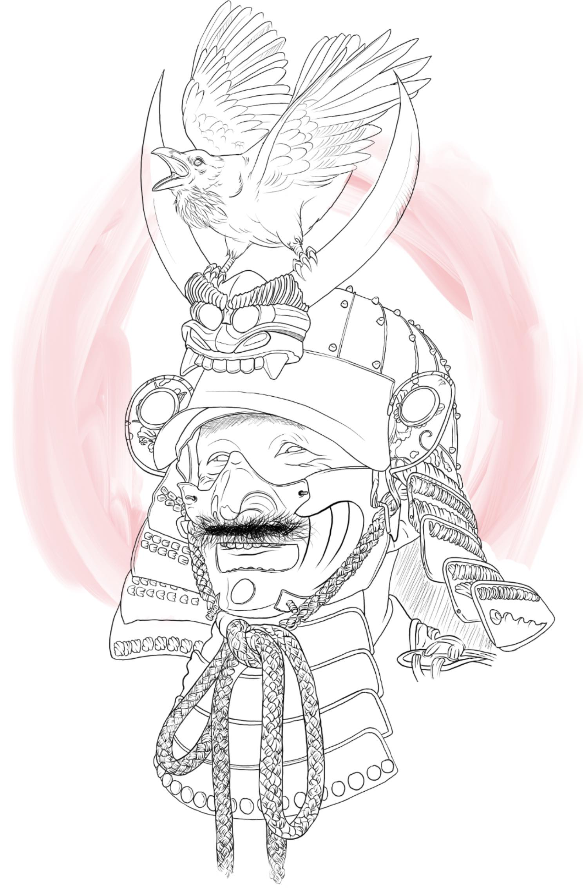
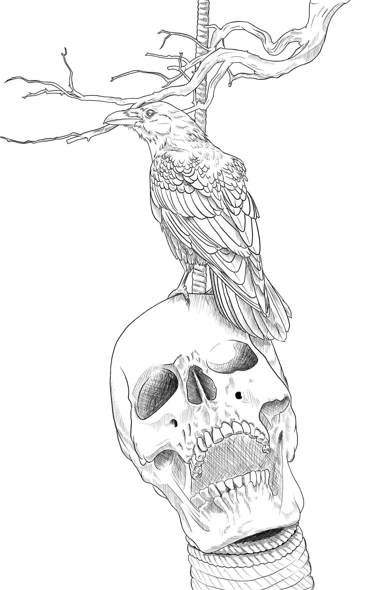
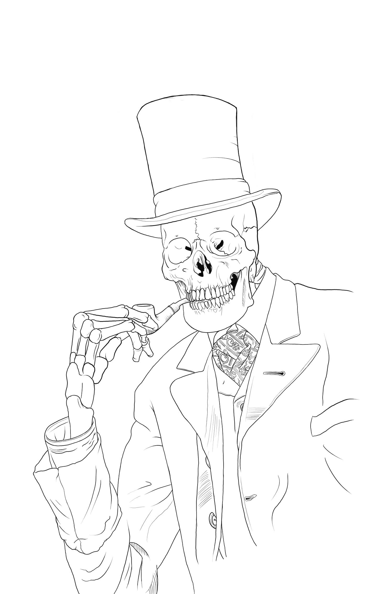

Sketchbook, is a raster graphics software app intended for expressive drawing and concept sketching also for making animations. The software was first developed by Alias Systems Corporation as StudioPaint, before being acquired by Autodesk and then being spun out into an independent company, Sketchbook, Inc.
These designs are made with Sketchbook app and iPad.
Hanya mask

a mask used in Japanese Noh theater, representing a jealous female demon.Dragon

eptilian legendary creature that appears in the folklore of many cultures worldwide.Greek statue

depictions of an ideal—beauty, piety, honor or sacrifice.Valkyrie

In Norse mythology, a valkyrie is one of a host of female figures who guide souls of the dead to the god Odin's hall Valhalla.Samurai

Samurai were the hereditary military nobility and officer caste of medieval and early-modern Japan from the late 12th century until their abolition in 1876.Crow

A crow is a bird of the genus Corvus, or more broadly a synonym for all of Corvus.Bones
